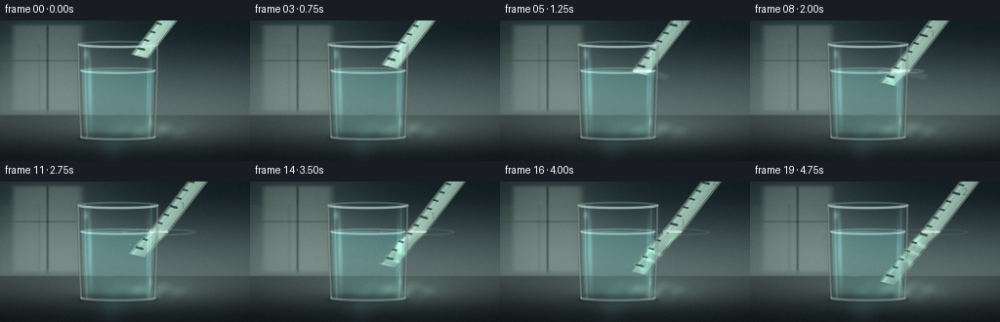
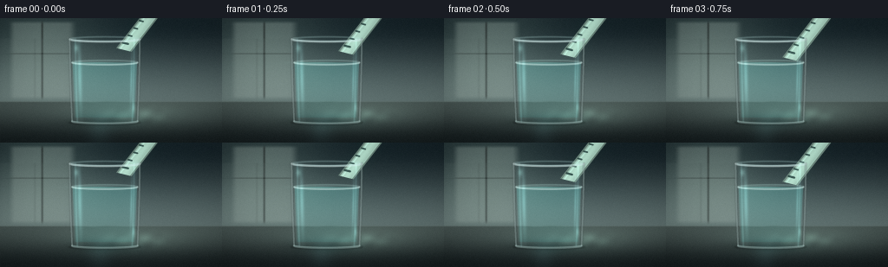
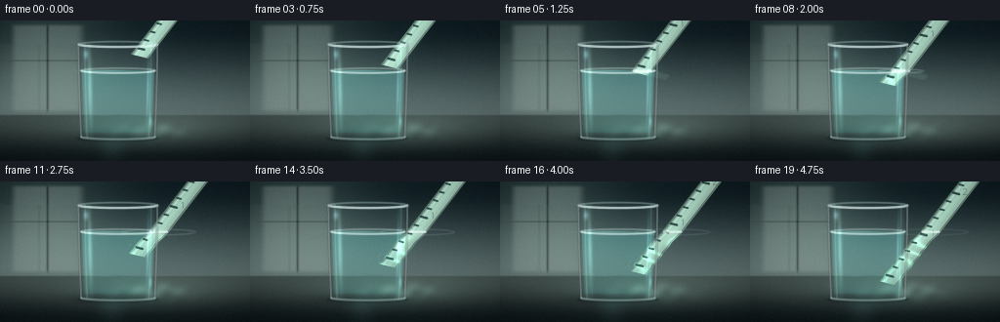
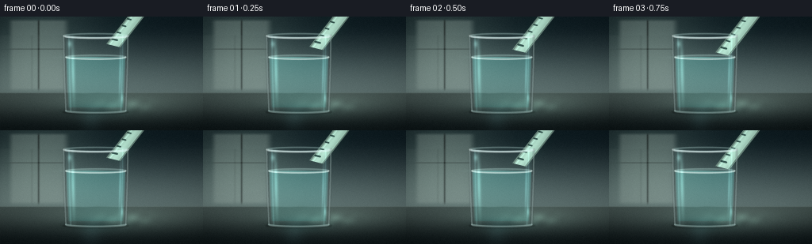

CODING AGENTS AS PIXEL WORLD MODELS
traex/DeepSeek-V4.1-Flash · phygen_075
点击播放 · 原生 RGB 像素
逐轮保存的候选
回放视频、检查图与代码变化。
每份候选均可单独播放。实际图片检查记录在下方工具轨迹中。
候选 01播放与检查图
点击播放 · 原生 RGB 像素


展开代码变化
--- 上一保存版本 +++ 本次保存版本 @@ -0,0 +1,642 @@ +"""Procedural RGB video: a plastic ruler slowly entering a glass of water.""" + +from pathlib import Path + +import cv2 +import numpy as np + +import artifact_io + + +CASE_DIR = Path(__file__).resolve().parent +WIDTH, HEIGHT = 256, 144 +FRAMES, FPS = 20, 4.0 +SS = 4 +RW, RH = WIDTH * SS, HEIGHT * SS + + +def smoothstep(edge0, edge1, value): + t = np.clip((value - edge0) / (edge1 - edge0), 0.0, 1.0) + return t * t * (3.0 - 2.0 * t) + + +def mix(a, b, t): + t = np.asarray(t, dtype=np.float32) + if t.ndim == 2: + t = t[..., None] + return a * (1.0 - t) + b * t + + +def over(base, color, alpha): + alpha = np.asarray(alpha, dtype=np.float32) + if alpha.ndim == 2: + alpha = alpha[..., None] + return base * (1.0 - alpha) + np.asarray(color, dtype=np.float32) * alpha + + +def blur(array, sigma): + return cv2.GaussianBlur(array.astype(np.float32), (0, 0), sigma) + + +def poly_mask(points, soft=1.0): + mask = np.zeros((RH, RW), dtype=np.uint8) + cv2.fillPoly(mask, [np.asarray(points, dtype=np.int32)], 255, cv2.LINE_AA) + mask = mask.astype(np.float32) / 255.0 + if soft > 0: + mask = blur(mask, soft) + return np.clip(mask, 0.0, 1.0) + + +def line_mask(p0, p1, width=2.0, soft=1.0): + mask = np.zeros((RH, RW), dtype=np.uint8) + cv2.line( + mask, + (int(round(p0[0])), int(round(p0[1]))), + (int(round(p1[0])), int(round(p1[1]))), + 255, + max(1, int(round(width))), + cv2.LINE_AA, + ) + mask = mask.astype(np.float32) / 255.0 + if soft > 0: + mask = blur(mask, soft) + return np.clip(mask, 0.0, 1.0) + + +def ellipse_mask(center, axes, width=2.0, start=0.0, end=360.0, soft=1.0): + mask = np.zeros((RH, RW), dtype=np.uint8) + cv2.ellipse( + mask, + (int(round(center[0])), int(round(center[1]))), + (int(round(axes[0])), int(round(axes[1]))), + 0.0, + start, + end, + 255, + max(1, int(round(width))), + cv2.LINE_AA, + ) + mask = mask.astype(np.float32) / 255.0 + if soft > 0: + mask = blur(mask, soft) + return np.clip(mask, 0.0, 1.0) + + +def radial_glow(xn, yn, cx, cy, sx, sy, power=1.0): + radius = ((xn - cx) / sx) ** 2 + ((yn - cy) / sy) ** 2 + return np.exp(-radius * power).astype(np.float32) + + +def glass_half_width(yn): + t = np.clip((yn - 0.165) / 0.670, 0.0, 1.0) + return 0.158 - 0.011 * t + 0.0018 * np.sin(t * np.pi) + + +def water_half_width(yn): + t = np.clip((yn - 0.355) / 0.445, 0.0, 1.0) + return 0.147 - 0.012 * t + + +def build_background(xn, yn): + top = np.array([0.075, 0.125, 0.145], dtype=np.float32) + lower = np.array([0.365, 0.435, 0.430], dtype=np.float32) + img = mix(top, lower, smoothstep(0.02, 0.70, yn)) + + window = ( + smoothstep(0.035, 0.070, xn) + * (1.0 - smoothstep(0.305, 0.350, xn)) + * smoothstep(0.015, 0.050, yn) + * (1.0 - smoothstep(0.620, 0.665, yn)) + ) + window_color = np.array([0.70, 0.765, 0.735], dtype=np.float32) + img = over(img, window_color, window * 0.24) + + soft_light = radial_glow(xn, yn, 0.18, 0.20, 0.34, 0.52, 1.3) + img += soft_light[..., None] * np.array([0.12, 0.14, 0.12], dtype=np.float32) + + mullion_v = np.exp(-((xn - 0.190) / 0.0045) ** 2) * window + mullion_h = np.exp(-((yn - 0.285) / 0.0040) ** 2) * window + img *= 1.0 - 0.46 * mullion_v[..., None] - 0.30 * mullion_h[..., None] + + table_start = 0.672 + table_mask = smoothstep(table_start - 0.008, table_start + 0.008, yn) + table_t = np.clip((yn - table_start) / (1.0 - table_start), 0.0, 1.0) + table_top = np.array([0.255, 0.305, 0.295], dtype=np.float32) + table_bottom = np.array([0.075, 0.105, 0.110], dtype=np.float32) + table = mix(table_top, table_bottom, smoothstep(0.0, 1.0, table_t)) + table += ( + radial_glow(xn, yn, 0.58, 0.78, 0.45, 0.16, 1.7)[..., None] + * np.array([0.09, 0.11, 0.10], dtype=np.float32) + ) + img = mix(img, table, table_mask) + + horizon = np.exp(-((yn - table_start) / 0.003) ** 2) + img = over(img, np.array([0.58, 0.64, 0.60], dtype=np.float32), horizon * 0.13) + return img + + +def add_table_lighting(img, xn, yn, u): + # Soft contact shadow and reflected color beneath the tumbler. + shadow = radial_glow(xn, yn, 0.472, 0.838, 0.235, 0.060, 2.3) + img *= 1.0 - 0.40 * shadow[..., None] + + under_glow = radial_glow(xn, yn, 0.492, 0.825, 0.155, 0.075, 1.6) + img += under_glow[..., None] * np.array([0.025, 0.070, 0.070], dtype=np.float32) + + # A changing caustic pool makes the liquid feel optically active. + drift = 0.010 * np.sin(2.0 * np.pi * u) + pool = radial_glow(xn, yn, 0.620 + drift, 0.782, 0.145, 0.065, 1.4) + ripple = ( + 0.52 + + 0.22 * np.sin(72.0 * xn + 31.0 * yn + 1.8 * u) + + 0.16 * np.sin(39.0 * xn - 48.0 * yn - 2.4 * u) + ) + caustic = pool * np.clip(ripple, 0.0, 1.0) * (0.72 + 0.28 * u) + img += caustic[..., None] * np.array([0.18, 0.25, 0.22], dtype=np.float32) + + # A faint elongated reflection ties the glass to the tabletop. + streak = radial_glow(xn, yn, 0.448, 0.900, 0.075, 0.175, 2.2) + img += streak[..., None] * np.array([0.030, 0.050, 0.052], dtype=np.float32) + return img + + +def refract_glass(img, xn, yn, yy, xx): + center = 0.472 + hw = glass_half_width(yn) + q = np.clip(np.abs(xn - center) / np.maximum(hw, 1e-4), 0.0, 1.0) + body = ( + smoothstep(0.158, 0.170, yn) + * (1.0 - smoothstep(0.830, 0.842, yn)) + * (1.0 - smoothstep(0.985, 1.005, q)) + ) + + sample_x = center + (xn - center) * (1.0 - 0.105 * q**2) + sample_y = yn + 0.0025 * np.sin(yn * 23.0 + q * 4.0) + map_x = np.clip(sample_x * RW, 0, RW - 1).astype(np.float32) + map_y = np.clip(sample_y * RH, 0, RH - 1).astype(np.float32) + warped = cv2.remap(img, map_x, map_y, cv2.INTER_CUBIC, borderMode=cv2.BORDER_REFLECT) + + img = mix(img, warped, body * 0.93) + cool = np.array([0.80, 0.94, 0.94], dtype=np.float32) + img = over(img, cool, body * (0.018 + 0.035 * q**3)) + edge_shade = body * smoothstep(0.84, 1.0, q) ** 2 + img *= 1.0 - 0.20 * edge_shade[..., None] + return img, body, q + + +def refract_water(img, xn, yn, xx, yy, u): + center = 0.472 + surface = 0.356 + bottom = 0.800 + hw = water_half_width(yn) + q = np.clip(np.abs(xn - center) / np.maximum(hw, 1e-4), 0.0, 1.0) + water = ( + smoothstep(surface - 0.002, surface + 0.003, yn) + * (1.0 - smoothstep(bottom - 0.005, bottom + 0.004, yn)) + * (1.0 - smoothstep(0.975, 1.002, q)) + ) + + shimmer = 0.0018 * np.sin(yn * 64.0 + xn * 12.0 + u * 2.0) + sample_x = center + (xn - center) * (1.0 - 0.145 * q**2) + shimmer * q + sample_y = yn + 0.0015 * np.sin(xn * 38.0 - yn * 17.0) + map_x = np.clip(sample_x * RW, 0, RW - 1).astype(np.float32) + map_y = np.clip(sample_y * RH, 0, RH - 1).astype(np.float32) + warped = cv2.remap(img, map_x, map_y, cv2.INTER_CUBIC, borderMode=cv2.BORDER_REFLECT) + img = mix(img, warped, water * 0.86) + + depth = np.clip((yn - surface) / (bottom - surface), 0.0, 1.0) + water_tint = np.array([0.24, 0.63, 0.61], dtype=np.float32) + img = over(img, water_tint, water * (0.060 + 0.035 * depth)) + img += ( + water[..., None] + * (1.0 - depth)[..., None] + * np.array([0.025, 0.075, 0.072], dtype=np.float32) + ) + return img, water, q + + +def ruler_geometry(tip_y, u): + tip = np.array([0.558 + 0.004 * u, tip_y], dtype=np.float32) + far = tip + np.array([0.545, -1.250], dtype=np.float32) + direction = far - tip + length = float(np.linalg.norm(direction)) + direction /= length + perpendicular = np.array([-direction[1], direction[0]], dtype=np.float32) + half_width = 0.0365 + return tip, far, direction, perpendicular, half_width, length + + +def make_ruler(tip_y, u, water_surface, underwater): + tip, far, direction, perpendicular, half_width, length = ruler_geometry(tip_y, u) + corners = np.array( + [ + tip - perpendicular * half_width, + far - perpendicular * half_width, + far + perpendicular * half_width, + tip + perpendicular * half_width, + ], + dtype=np.float32, + ) + points = np.column_stack((corners[:, 0] * RW, corners[:, 1] * RH)) + mask = poly_mask(points, soft=0.8) + + along = (xn - tip[0]) * direction[0] + (yn - tip[1]) * direction[1] + across = ((xn - tip[0]) * perpendicular[0] + (yn - tip[1]) * perpendicular[1]) / half_width + across = np.clip(across, -1.2, 1.2) + valid = (along >= 0.0) & (along <= length) + mask *= valid + + center_shade = 0.82 + 0.22 * (1.0 - np.clip(np.abs(across), 0.0, 1.0) ** 1.5) + base = np.array([0.72, 0.88, 0.81], dtype=np.float32) + color = base[None, None, :] * center_shade[..., None] + + left_edge = np.exp(-((across + 0.90) / 0.075) ** 2) + right_edge = np.exp(-((across - 0.90) / 0.075) ** 2) + color *= 1.0 - 0.38 * np.clip(left_edge + right_edge, 0.0, 1.0)[..., None] + + glossy = np.exp(-((across + 0.52) / 0.105) ** 2) + color += glossy[..., None] * np.array([0.13, 0.17, 0.16], dtype=np.float32) + thin_glint = np.exp(-((across - 0.73) / 0.045) ** 2) + color += thin_glint[..., None] * np.array([0.07, 0.10, 0.09], dtype=np.float32) + + if underwater: + depth = np.clip((yn - water_surface) / 0.30, 0.0, 1.0) + color = color * (0.88 - 0.10 * depth[..., None]) + color = over(color, np.array([0.34, 0.70, 0.65], dtype=np.float32), 0.13 * depth) + caustic = ( + 0.5 + + 0.5 + * np.sin(66.0 * xn - 34.0 * yn + 3.0 * np.sin(21.0 * yn + u * 5.0)) + ) + caustic = np.clip(caustic, 0.0, 1.0) ** 3 + color += ( + caustic[..., None] + * smoothstep(water_surface, water_surface + 0.06, yn)[..., None] + * np.array([0.12, 0.20, 0.17], dtype=np.float32) + ) + + # Tick marks and a few small numerals make the object read as a ruler. + tick_mask = np.zeros((RH, RW), dtype=np.uint8) + label_mask = np.zeros((RH, RW), dtype=np.uint8) + spacing = 0.064 + for index in range(20): + distance = 0.052 + spacing * index + center = tip + direction * distance + if center[1] < -0.08 or center[1] > 1.08: + continue + major = index % 5 == 0 + inner = -half_width * (0.05 if major else 0.32) + outer = -half_width * 0.82 + p0 = center + perpendicular * outer + p1 = center + perpendicular * inner + cv2.line( + tick_mask, + (int(round(p0[0] * RW)), int(round(p0[1] * RH))), + (int(round(p1[0] * RW)), int(round(p1[1] * RH))), + 255, + max(1, int(round((2.6 if major else 1.6) * SS * 0.72))), + cv2.LINE_AA, + ) + if major and index > 0: + label = str(index // 5) + p = center + perpendicular * half_width * 0.30 + cv2.putText( + label_mask, + label, + (int(p[0] * RW), int(p[1] * RH)), + cv2.FONT_HERSHEY_SIMPLEX, + 0.30 * SS, + 255, + 1, + cv2.LINE_AA, + ) + + tick_mask = blur(tick_mask.astype(np.float32) / 255.0, 0.45) + label_mask = blur(label_mask.astype(np.float32) / 255.0, 0.35) + color = over(color, np.array([0.055, 0.145, 0.145], dtype=np.float32), tick_mask * 0.78) + color = over(color, np.array([0.045, 0.115, 0.115], dtype=np.float32), label_mask * 0.72) + + return mask, color, points + + +def composite_ruler(img, tip_y, u, water_surface): + underwater_any = tip_y > water_surface + mask, color, _ = make_ruler(tip_y, u, water_surface, underwater_any) + surface_soft = 0.0009 + above = mask * (1.0 - smoothstep(water_surface - surface_soft, water_surface + surface_soft, yn)) + below = mask * smoothstep(water_surface - surface_soft, water_surface + surface_soft, yn) + + if np.max(below) > 0.0: + depth = np.clip((yn - water_surface) / 0.20, 0.0, 1.0) + dx = 0.0095 * smoothstep(water_surface, water_surface + 0.09, yn) + dx += 0.0017 * np.sin((yn - water_surface) * 82.0 + 2.5 * u) * depth + map_x = np.clip(xx + dx * RW, 0, RW - 1).astype(np.float32) + color_under = cv2.remap(color, map_x, yy, cv2.INTER_CUBIC, borderMode=cv2.BORDER_REFLECT) + below_warped = cv2.remap( + below.astype(np.float32), map_x, yy, cv2.INTER_CUBIC, borderMode=cv2.BORDER_REFLECT + ) + img = over(img, color_under, np.clip(below_warped, 0.0, 1.0) * 0.88) + + # Compressed reflection of the above-water ruler on the water plane. + if tip_y < water_surface + 0.12: + tip, far, direction, perpendicular, half_width, length = ruler_geometry(tip_y, u) + crossing_y = water_surface + t_cross = (crossing_y - tip[1]) / direction[1] + if t_cross > 0: + crossing = tip + direction * t_cross + reflect_dir = np.array([direction[0], -direction[1] * 0.22], dtype=np.float32) + reflect_dir /= np.linalg.norm(reflect_dir) + reflect_perp = np.array([-reflect_dir[1], reflect_dir[0]], dtype=np.float32) + r0 = crossing - reflect_perp * half_width * 0.65 + r1 = crossing + reflect_dir * 0.115 - reflect_perp * half_width * 0.48 + r2 = crossing + reflect_dir * 0.115 + reflect_perp * half_width * 0.48 + r3 = crossing + reflect_perp * half_width * 0.65 + refl_points = np.column_stack( + (np.array([r0[0], r1[0], r2[0], r3[0]]) * RW, + np.array([r0[1], r1[1], r2[1], r3[1]]) * RH) + ) + reflection = poly_mask(refl_points, soft=2.4) + reflection *= smoothstep(water_surface - 0.001, water_surface + 0.004, yn) + reflection *= 1.0 - smoothstep(water_surface + 0.04, water_surface + 0.13, yn) + img = over(img, np.array([0.61, 0.82, 0.76], dtype=np.float32), reflection * 0.12) + + img = over(img, color, above * 0.93) + return img, mask + + +def add_water_surface(img, xn, yn, u, tip_y): + center_x = 0.472 + surface = 0.356 + hw_top = water_half_width(surface) + + # Front and rear halves of the elliptical waterline. + back = ellipse_mask( + (center_x * RW, surface * RH), + (hw_top * RW, 0.0175 * RH), + width=1.2 * SS, + start=180, + end=360, + soft=1.0, + ) + front = ellipse_mask( + (center_x * RW, surface * RH), + (hw_top * RW, 0.0175 * RH), + width=1.55 * SS, + start=0, + end=180, + soft=0.9, + ) + img = over(img, np.array([0.76, 0.95, 0.92], dtype=np.float32), back * 0.24) + img = over(img, np.array([0.89, 0.99, 0.97], dtype=np.float32), front * 0.48) + + surface_sheen = radial_glow(xn, yn, center_x - 0.035, surface + 0.001, 0.135, 0.012, 2.1) + img += surface_sheen[..., None] * np.array([0.08, 0.13, 0.12], dtype=np.float32) + + if tip_y > surface - 0.01: + tip, far, direction, perpendicular, half_width, length = ruler_geometry(tip_y, u) + t_cross = (surface - tip[1]) / direction[1] + if t_cross > 0: + crossing = tip + direction * t_cross + age = max(0.0, (tip_y - surface) / 0.47 * 5.0) + cx = crossing[0] + cy = surface + 0.003 + fade = np.exp(-0.38 * age) * smoothstep(0.0, 0.16, age + 0.03) + for ring_index in range(2): + phase = age - 0.18 * ring_index + if phase <= 0: + continue + rx = 0.022 + 0.070 * min(phase, 1.8) + ry = 0.0035 + 0.010 * min(phase, 1.8) + alpha = 0.20 * fade * np.exp(-0.55 * ring_index) + ring = ellipse_mask( + (cx * RW, cy * RH), + (rx * RW, ry * RH), + width=1.1 * SS, + soft=1.15, + ) + img = over(img, np.array([0.86, 0.98, 0.96], dtype=np.float32), ring * alpha) + + # Meniscus brightening where the plastic breaks the surface. + left = crossing - perpendicular * half_width + right = crossing + perpendicular * half_width + p0 = (left[0] * RW, (surface + 0.001) * RH) + p1 = (right[0] * RW, (surface + 0.001) * RH) + meniscus = line_mask(p0, p1, width=1.9 * SS, soft=1.0) + img = over(img, np.array([0.95, 1.0, 0.99], dtype=np.float32), meniscus * 0.62) + + for side in (-1.0, 1.0): + p = crossing + perpendicular * half_width * side + arc = ellipse_mask( + ((p[0] - 0.007 * side) * RW, (surface - 0.001) * RH), + (0.008 * RW, 0.007 * RH), + width=1.0 * SS, + start=0 if side > 0 else 180, + end=180 if side > 0 else 360, + soft=0.8, + ) + img = over(img, np.array([0.92, 1.0, 0.98], dtype=np.float32), arc * 0.30) + return img + + +def add_glass_front(img, xn, yn, body, q, u): + center = 0.472 + rim_y = 0.168 + bottom_y = 0.828 + + # Inner wall and rear lip, both seen through the glass. + inner_left = center - glass_half_width(yn) * 0.84 + inner_right = center + glass_half_width(yn) * 0.84 + img += ( + np.exp(-((xn - inner_left) / 0.004) ** 2)[..., None] + * body[..., None] + * np.array([0.08, 0.12, 0.12], dtype=np.float32) + ) + img += ( + np.exp(-((xn - inner_right) / 0.004) ** 2)[..., None] + * body[..., None] + * np.array([0.07, 0.11, 0.11], dtype=np.float32) + ) + + rear_rim = ellipse_mask( + (center * RW, rim_y * RH), + (glass_half_width(rim_y) * RW, 0.0185 * RH), + width=1.35 * SS, + start=180, + end=360, + soft=1.0, + ) + img = over(img, np.array([0.75, 0.92, 0.91], dtype=np.float32), rear_rim * 0.25) + + front_rim = ellipse_mask( + (center * RW, rim_y * RH), + (glass_half_width(rim_y) * RW, 0.0185 * RH), + width=1.7 * SS, + start=0, + end=180, + soft=0.8, + ) + img = over(img, np.array([0.91, 0.98, 0.97], dtype=np.float32), front_rim * 0.58) + lip = ellipse_mask( + (center * RW, (rim_y + 0.0045) * RH), + ((glass_half_width(rim_y) - 0.007) * RW, 0.0115 * RH), + width=0.9 * SS, + start=0, + end=180, + soft=1.0, + ) + img = over(img, np.array([0.58, 0.80, 0.80], dtype=np.float32), lip * 0.25) + + ys = np.linspace(rim_y, bottom_y, 160) + left_points = np.column_stack( + ((center - glass_half_width(ys)) * RW, ys * RH) + ).astype(np.int32) + right_points = np.column_stack( + ((center + glass_half_width(ys)) * RW, ys * RH) + ).astype(np.int32) + side_mask = np.zeros((RH, RW), dtype=np.uint8) + cv2.polylines(side_mask, [left_points], False, 255, int(1.7 * SS), cv2.LINE_AA) + cv2.polylines(side_mask, [right_points], False, 255, int(1.7 * SS), cv2.LINE_AA) + side_mask = blur(side_mask.astype(np.float32) / 255.0, 0.75) + img = over(img, np.array([0.84, 0.96, 0.95], dtype=np.float32), side_mask * 0.40) + + # Dark outline keeps the transparent vessel legible against the wall. + outline = np.zeros((RH, RW), dtype=np.uint8) + cv2.polylines(outline, [left_points], False, 255, int(2.7 * SS), cv2.LINE_AA) + cv2.polylines(outline, [right_points], False, 255, int(2.7 * SS), cv2.LINE_AA) + outline = blur(outline.astype(np.float32) / 255.0, 1.25) + img *= 1.0 - 0.20 * outline[..., None] + + bottom_ellipse = ellipse_mask( + (center * RW, bottom_y * RH), + (glass_half_width(bottom_y) * RW, 0.017 * RH), + width=1.7 * SS, + start=0, + end=180, + soft=0.9, + ) + img = over(img, np.array([0.80, 0.94, 0.92], dtype=np.float32), bottom_ellipse * 0.42) + base_shadow = ellipse_mask( + (center * RW, (bottom_y + 0.008) * RH), + ((glass_half_width(bottom_y) + 0.012) * RW, 0.016 * RH), + width=2.0 * SS, + start=0, + end=180, + soft=1.8, + ) + img *= 1.0 - 0.19 * base_shadow[..., None] + + # Broad, soft reflections down the curved walls. + left_curve = center - glass_half_width(yn) * 0.78 + 0.008 + right_curve = center + glass_half_width(yn) * 0.80 - 0.004 + left_glint = np.exp(-((xn - left_curve) / 0.009) ** 2) * body + left_glint *= np.exp(-((yn - 0.47) / 0.245) ** 2) + right_glint = np.exp(-((xn - right_curve) / 0.0045) ** 2) * body + right_glint *= np.exp(-((yn - 0.49) / 0.20) ** 2) + img += left_glint[..., None] * np.array([0.12, 0.18, 0.18], dtype=np.float32) + img += right_glint[..., None] * np.array([0.09, 0.14, 0.14], dtype=np.float32) + + # Small glints at the rim and near the thick glass foot. + glint1 = radial_glow(xn, yn, 0.344, 0.240, 0.014, 0.042, 1.8) + glint2 = radial_glow(xn, yn, 0.602, 0.715, 0.008, 0.055, 2.1) + img += glint1[..., None] * np.array([0.14, 0.20, 0.19], dtype=np.float32) + img += glint2[..., None] * np.array([0.10, 0.15, 0.15], dtype=np.float32) + + # Very subtle blue-green body tint, heavier toward the edges. + tint_alpha = body * (0.008 + 0.020 * smoothstep(0.65, 1.0, q)) + img = over(img, np.array([0.65, 0.88, 0.87], dtype=np.float32), tint_alpha) + return img + + +def add_bubbles(img, xn, yn, u, tip_y): + surface = 0.356 + if tip_y <= surface + 0.035: + return img + tip, far, direction, perpendicular, half_width, length = ruler_geometry(tip_y, u) + for index in range(7): + phase = (index * 0.137 + u * 0.23) % 1.0 + side = -1.0 if index % 2 else 1.0 + bx = tip[0] + side * half_width * (1.10 + 0.18 * (index % 3)) + by = tip[1] - 0.015 - 0.115 * phase + if by < surface + 0.008: + continue + radius = (0.0017 + 0.0011 * (index % 4)) * (0.8 + 0.2 * np.sin(u * 9.0 + index)) + bubble = radial_glow(xn, yn, bx, by, radius, radius * 1.12, 3.2) + ring = radial_glow(xn, yn, bx, by, radius * 1.7, radius * 1.8, 3.6) + img += bubble[..., None] * np.array([0.18, 0.24, 0.23], dtype=np.float32) + img -= ring[..., None] * np.array([0.020, 0.018, 0.018], dtype=np.float32) + return img + + +def render_frame(index): + u = index / (FRAMES - 1) + tip_y = 0.255 + 0.470 * u + water_surface = 0.356 + + img = build_background(xn, yn) + img = add_table_lighting(img, xn, yn, u) + img, body, q = refract_glass(img, xn, yn, yy, xx) + img, water, water_q = refract_water(img, xn, yn, xx, yy, u) + + img, _ = composite_ruler(img, tip_y, u, water_surface) + img = add_bubbles(img, xn, yn, u, tip_y) + + water_depth = np.clip((yn - water_surface) / 0.444, 0.0, 1.0) + img = over( + img, + np.array([0.30, 0.67, 0.64], dtype=np.float32), + water * (0.028 + 0.024 * water_depth), + ) + img += ( + water[..., None] + * (1.0 - water_depth)[..., None] + * np.array([0.012, 0.035, 0.034], dtype=np.float32) + ) + + img = add_water_surface(img, xn, yn, u, tip_y) + img = add_glass_front(img, xn, yn, body, q, u) + + bright = np.clip(img - 0.72, 0.0, None) + bloom = cv2.GaussianBlur(bright, (0, 0), 8.0 * SS) + img += bloom * 0.22 + + vignette = 1.0 - 0.22 * ( + ((xn - 0.50) / 0.70) ** 2 + ((yn - 0.50) / 0.88) ** 2 + ) + img *= np.clip(vignette, 0.66, 1.0)[..., None] + img = np.clip(img, 0.0, 1.0) + img = np.power(img, 1.0 / 1.035) + + small = cv2.resize(img, (WIDTH, HEIGHT), interpolation=cv2.INTER_AREA) + rng = np.random.default_rng(4100 + index) + grain = rng.normal(0.0, 0.0045, (HEIGHT, WIDTH, 1)).astype(np.float32) + small = np.clip(small + grain, 0.0, 1.0) + return np.round(small * 255.0).astype(np.uint8) + + +xn_grid, yn_grid = np.meshgrid( + np.linspace(0.0, 1.0, RW, dtype=np.float32), + np.linspace(0.0, 1.0, RH, dtype=np.float32), +) +xn = xn_grid +yn = yn_grid +xx = xn * (RW - 1) +yy = yn * (RH - 1) + + +def main(): + frames = np.stack([render_frame(index) for index in range(FRAMES)], axis=0) + artifact_io.save(frames, CASE_DIR) + + writer = cv2.VideoWriter( + str(CASE_DIR / "preview.mp4"), + cv2.VideoWriter_fourcc(*"mp4v"), + FPS, + (WIDTH, HEIGHT), + ) + for frame in frames: + writer.write(cv2.cvtColor(frame, cv2.COLOR_RGB2BGR)) + writer.release() + + +if __name__ == "__main__": + main()
候选 02播放与检查图
点击播放 · 原生 RGB 像素


展开代码变化
--- 上一保存版本
+++ 本次保存版本
@@ -205,8 +205,8 @@
img = mix(img, warped, water * 0.86)
depth = np.clip((yn - surface) / (bottom - surface), 0.0, 1.0)
- water_tint = np.array([0.24, 0.63, 0.61], dtype=np.float32)
- img = over(img, water_tint, water * (0.060 + 0.035 * depth))
+ water_tint = np.array([0.22, 0.67, 0.64], dtype=np.float32)
+ img = over(img, water_tint, water * (0.070 + 0.040 * depth))
img += (
water[..., None]
* (1.0 - depth)[..., None]
@@ -261,8 +261,8 @@
if underwater:
depth = np.clip((yn - water_surface) / 0.30, 0.0, 1.0)
- color = color * (0.88 - 0.10 * depth[..., None])
- color = over(color, np.array([0.34, 0.70, 0.65], dtype=np.float32), 0.13 * depth)
+ color = color * (0.94 - 0.09 * depth[..., None])
+ color = over(color, np.array([0.38, 0.76, 0.70], dtype=np.float32), 0.11 * depth)
caustic = (
0.5
+ 0.5
@@ -272,7 +272,7 @@
color += (
caustic[..., None]
* smoothstep(water_surface, water_surface + 0.06, yn)[..., None]
- * np.array([0.12, 0.20, 0.17], dtype=np.float32)
+ * np.array([0.15, 0.25, 0.21], dtype=np.float32)
)
# Tick marks and a few small numerals make the object read as a ruler.
@@ -335,7 +335,7 @@
below_warped = cv2.remap(
below.astype(np.float32), map_x, yy, cv2.INTER_CUBIC, borderMode=cv2.BORDER_REFLECT
)
- img = over(img, color_under, np.clip(below_warped, 0.0, 1.0) * 0.88)
+ img = over(img, color_under, np.clip(below_warped, 0.0, 1.0) * 0.94)
# Compressed reflection of the above-water ruler on the water plane.
if tip_y < water_surface + 0.12:
@@ -386,11 +386,11 @@
end=180,
soft=0.9,
)
- img = over(img, np.array([0.76, 0.95, 0.92], dtype=np.float32), back * 0.24)
- img = over(img, np.array([0.89, 0.99, 0.97], dtype=np.float32), front * 0.48)
+ img = over(img, np.array([0.82, 0.98, 0.95], dtype=np.float32), back * 0.30)
+ img = over(img, np.array([0.94, 1.00, 0.98], dtype=np.float32), front * 0.57)
surface_sheen = radial_glow(xn, yn, center_x - 0.035, surface + 0.001, 0.135, 0.012, 2.1)
- img += surface_sheen[..., None] * np.array([0.08, 0.13, 0.12], dtype=np.float32)
+ img += surface_sheen[..., None] * np.array([0.11, 0.17, 0.16], dtype=np.float32)
if tip_y > surface - 0.01:
tip, far, direction, perpendicular, half_width, length = ruler_geometry(tip_y, u)
@@ -465,7 +465,7 @@
end=360,
soft=1.0,
)
- img = over(img, np.array([0.75, 0.92, 0.91], dtype=np.float32), rear_rim * 0.25)
+ img = over(img, np.array([0.81, 0.96, 0.94], dtype=np.float32), rear_rim * 0.31)
front_rim = ellipse_mask(
(center * RW, rim_y * RH),
@@ -475,7 +475,7 @@
end=180,
soft=0.8,
)
- img = over(img, np.array([0.91, 0.98, 0.97], dtype=np.float32), front_rim * 0.58)
+ img = over(img, np.array([0.96, 1.00, 0.99], dtype=np.float32), front_rim * 0.67)
lip = ellipse_mask(
(center * RW, (rim_y + 0.0045) * RH),
((glass_half_width(rim_y) - 0.007) * RW, 0.0115 * RH),
@@ -532,14 +532,14 @@
left_glint *= np.exp(-((yn - 0.47) / 0.245) ** 2)
right_glint = np.exp(-((xn - right_curve) / 0.0045) ** 2) * body
right_glint *= np.exp(-((yn - 0.49) / 0.20) ** 2)
- img += left_glint[..., None] * np.array([0.12, 0.18, 0.18], dtype=np.float32)
- img += right_glint[..., None] * np.array([0.09, 0.14, 0.14], dtype=np.float32)
+ img += left_glint[..., None] * np.array([0.15, 0.22, 0.21], dtype=np.float32)
+ img += right_glint[..., None] * np.array([0.12, 0.18, 0.18], dtype=np.float32)
# Small glints at the rim and near the thick glass foot.
glint1 = radial_glow(xn, yn, 0.344, 0.240, 0.014, 0.042, 1.8)
glint2 = radial_glow(xn, yn, 0.602, 0.715, 0.008, 0.055, 2.1)
- img += glint1[..., None] * np.array([0.14, 0.20, 0.19], dtype=np.float32)
- img += glint2[..., None] * np.array([0.10, 0.15, 0.15], dtype=np.float32)
+ img += glint1[..., None] * np.array([0.18, 0.25, 0.24], dtype=np.float32)
+ img += glint2[..., None] * np.array([0.13, 0.19, 0.19], dtype=np.float32)
# Very subtle blue-green body tint, heavier toward the edges.
tint_alpha = body * (0.008 + 0.020 * smoothstep(0.65, 1.0, q))
@@ -597,14 +597,15 @@
bright = np.clip(img - 0.72, 0.0, None)
bloom = cv2.GaussianBlur(bright, (0, 0), 8.0 * SS)
- img += bloom * 0.22
+ img += bloom * 0.30
vignette = 1.0 - 0.22 * (
((xn - 0.50) / 0.70) ** 2 + ((yn - 0.50) / 0.88) ** 2
)
img *= np.clip(vignette, 0.66, 1.0)[..., None]
img = np.clip(img, 0.0, 1.0)
- img = np.power(img, 1.0 / 1.035)
+ img = np.clip((img - 0.5) * 1.055 + 0.5, 0.0, 1.0)
+ img = np.power(img, 1.0 / 1.025)
small = cv2.resize(img, (WIDTH, HEIGHT), interpolation=cv2.INTER_AREA)
rng = np.random.default_rng(4100 + index)
可观测工具轨迹
实际执行的命令与返回图片。
命令 1exit 0
/bin/bash -lc "pwd && rg --files -g '"'!*.mp4'"' -g '"'!*.mov'"' -g '"'!*.png'"' -g '"'!*.jpg'"' | sort"
命令 2exit 0
/bin/bash -lc "sed -n '1,240p' prompt.txt"
命令 3exit 0
/bin/bash -lc "sed -n '1,280p' GENERATION_RULES.md"
命令 4exit 0
/bin/bash -lc 'cat task_spec.json'
命令 5exit 0
/bin/bash -lc "find . -maxdepth 2 -type f -printf '%p %s bytes\\n' | sort | head -200"
命令 6exit 0
/bin/bash -lc "sed -n '1,260p' artifact_io.py"
命令 7exit 0
/bin/bash -lc "sed -n '1,260p' player_template.html"
命令 8exit 0
/bin/bash -lc 'which ffmpeg || true; ffmpeg -version 2>/dev/null | head -3 || true'
命令 9exit 0
/bin/bash -lc "python - <<'PY'
import numpy, PIL
print('numpy', numpy.__version__)
print('PIL', PIL.__version__)
try:
import cv2; print('cv2',cv2.__version__)
except Exception as e: print('no cv2',e)
try:
import imageio; print('imageio',imageio.__version__)
except Exception as e: print('no imageio',e)
PY"命令 10exit 0
/bin/bash -lc 'command -v chafa || true; command -v viu || true; command -v jp2 || true; command -v img2txt || true; command -v ffplay || true; command -v python'
命令 11exit 1
/bin/bash -lc 'python generate.py'
命令 12exit 0
/bin/bash -lc "rg -n \"depth|water \\*|water\\[|body \\*|q\\*\\*|xn, yn|xx, yy\" generate.py | head -120"
命令 13exit 1
/bin/bash -lc 'python generate.py'
命令 14exit 1
/bin/bash -lc 'python generate.py'
命令 15exit 0
/bin/bash -lc "nl -ba generate.py | sed -n '438,548p'"
命令 16exit 1
/bin/bash -lc 'python generate.py'
命令 17exit 1
/bin/bash -lc 'python generate.py'
命令 18exit 0
/bin/bash -lc "rg -n \"cv2\\.(polylines|line|ellipse|circle)\" generate.py"
命令 19exit 1
/bin/bash -lc 'python generate.py'
命令 20exit 0
/bin/bash -lc 'python generate.py'
命令 21exit 0
/bin/bash -lc "python - <<'PY'
from PIL import Image
import numpy as np
chars=' .:-=+*#%@'
for fn in ['frames/00.png','frames/10.png','frames/19.png','inspection.png']:
im=Image.open(fn).convert('L')
if fn=='inspection.png': im=im.resize((100,45))
else: im=im.resize((100,45))
a=np.asarray(im,dtype=float)/255
print('\\n###',fn)
for row in a:
print(''.join(chars[min(9,int(v*10))] for v in row))
PY"命令 22exit 0
/bin/bash -lc "python - <<'PY'
from PIL import Image
import numpy as np
im=np.asarray(Image.open('frames/19.png')).astype(float)/255
# summarize RGB/lightness by 8x8 regions
for y in range(0,144,12):
row=[]
for x in range(0,256,16):
b=im[y:y+12,x:x+16].mean((0,1))
row.append('%02x%02x%02x'%tuple(np.clip(b*255,0,255).astype(int)))
print(y, ' '.join(row))
print('mean', im.mean((0,1)), 'std', im.std((0,1)))
# difference stats
frames=np.stack([np.asarray(Image.open(f'frames/{i:02d}.png')).astype(float) for i in range(20)])
d=np.abs(frames[1:]-frames[:-1]).mean((1,2,3))
print('motion',d)
PY"命令 23exit 0
/bin/bash -lc "python - <<'PY'
from PIL import Image
import numpy as np
for i in [0,5,10,15,19]:
a=np.asarray(Image.open(f'frames/{i:02d}.png')).astype(float)
# crop glass and ruler
c=a[15:130,65:180]
print(i, 'all', a.mean((0,1)).round(1), 'glass',c.mean((0,1)).round(1),'contrast',c.std((0,1)).round(1))
PY"命令 24exit 0
/bin/bash -lc 'python generate.py'
命令 25exit 0
/bin/bash -lc "python - <<'PY'
from pathlib import Path
from PIL import Image
import numpy as np, json
p=Path('.')
z=np.load('pixels.npz')['pixels']
print('pixels',z.shape,z.dtype,'unique',len(np.unique(z)))
frames=np.stack([np.asarray(Image.open(p/f'frames/{i:02d}.png').convert('RGB')) for i in range(20)])
print('pngs',frames.shape,frames.dtype,'range',frames.min(),frames.max(),'mean',frames.mean((0,1,2)).round(2),'std',frames.std((0,1,2)).round(2))
d=np.abs(frames[1:].astype(float)-frames[:-1].astype(float)).mean((1,2,3))
print('motion mean',d.mean().round(3),'min',d.min().round(3),'max',d.max().round(3))
print('files',[(f.name,f.stat().st_size) for f in sorted(p.iterdir()) if f.is_file()])
print('html ready token', '__DATA__' not in (p/'index.html').read_text() and '__pixelReady' in (p/'index.html').read_text())
PY"命令 26exit 0
/bin/bash -lc "python - <<'PY'
import cv2
cap=cv2.VideoCapture('preview.mp4')
print('opened',cap.isOpened(),'frames',int(cap.get(cv2.CAP_PROP_FRAME_COUNT)),'fps',cap.get(cv2.CAP_PROP_FPS),'size',int(cap.get(cv2.CAP_PROP_FRAME_WIDTH)),int(cap.get(cv2.CAP_PROP_FRAME_HEIGHT)))
n=0
while True:
ok,frame=cap.read()
if not ok: break
n+=1
print('decoded',n,'last_mean',frame.mean(axis=(0,1)).round(2).tolist())
cap.release()
PY
python -m py_compile generate.py"命令 27exit 0
/bin/bash -lc "python - <<'PY'
import cv2
cap=cv2.VideoCapture('preview.mp4')
frames=[]
while True:
ok, frame = cap.read()
if not ok:
break
frames.append(frame)
cap.release()
print('decoded', len(frames), 'fps', 4.0, 'size', (256, 144), 'last_mean', frames[-1].mean(axis=(0, 1)).round(2).tolist())
PY"命令 28exit 0
/bin/bash -lc 'python -m py_compile generate.py && git status --short 2>/dev/null || true'
命令 29exit 0
/bin/bash -lc "python - <<'PY'
from PIL import Image
import numpy as np
chars=' .:-=+*#%@'
for fn in ['frames/00.png','frames/19.png']:
a=np.asarray(Image.open(fn).convert('L').resize((96,40)),dtype=float)/255
print('\\n###',fn)
for row in a:
print(''.join(chars[min(9,int(v*10))] for v in row))
PY"保存候选 2 份；完成命令 29 次；可验证图片返回 0 张。原始 API 响应与完整日志保留在本地。